Free to use for coverage of the game. The tour video: tour-pickwick.mp4.
"Creating a game about water skiing is the most difficult I could think of, and that's part of the reason I did it." - Art Joyce
Art grew up water skiing on Pickwick Lake. When he set out to make a game with an AI team - Claude, Anthropic's AI, as lead developer, with ChatGPT, Gemini and Kimi as critics - he picked water skiing because it is so hard to get right. A skier is a person on a board being pulled by a rope behind a moving boat, across moving water. So instead of faking it, the team built the real physics:
When something felt wrong, the team measured it instead of guessing, and Art's own memory of how skiing feels was the final test.
It's all completely free - no ads, nothing to buy. Made simply to share with others. Made with Claude, Anthropic's AI, and other AI tools.
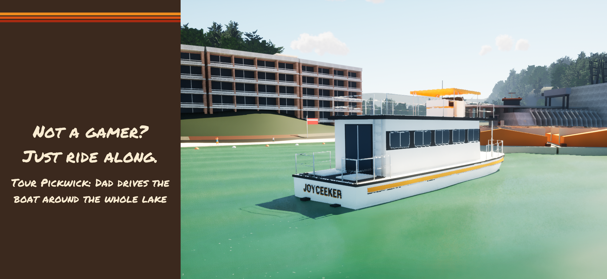
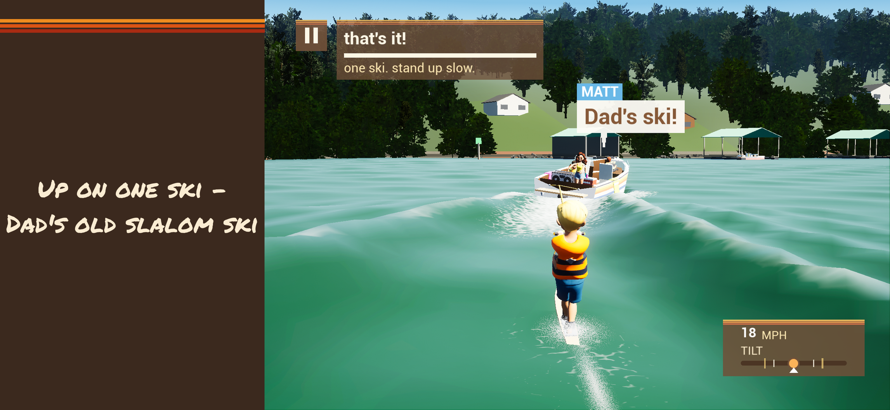
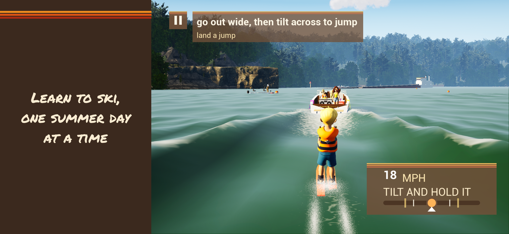
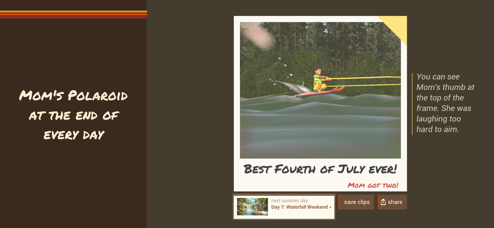
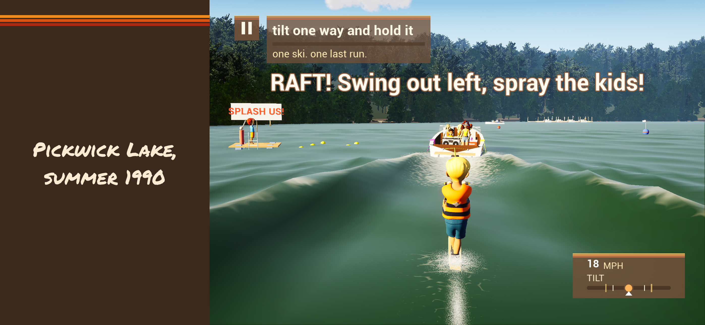
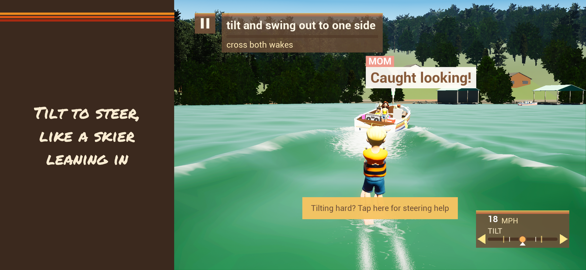
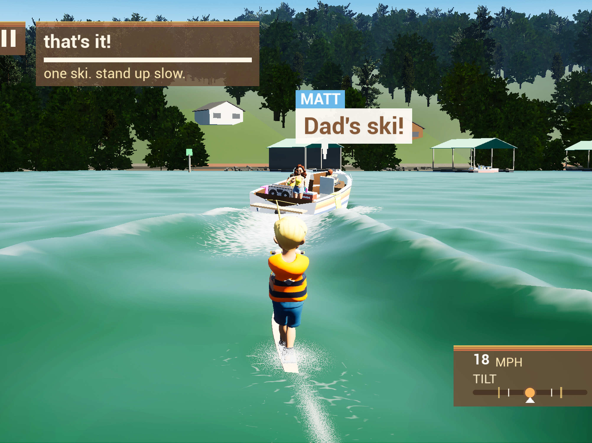
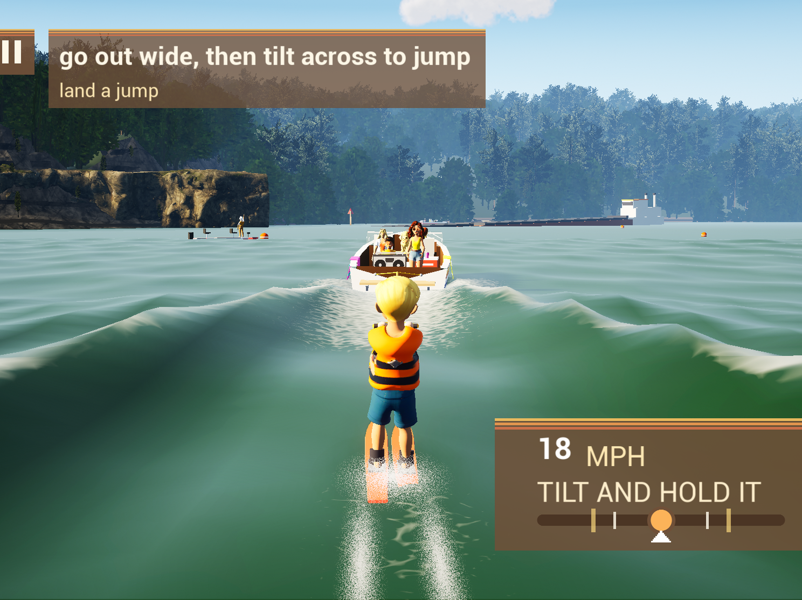
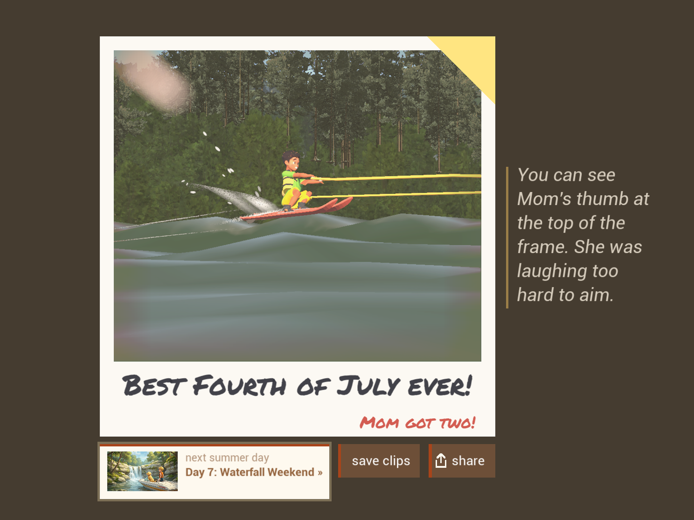
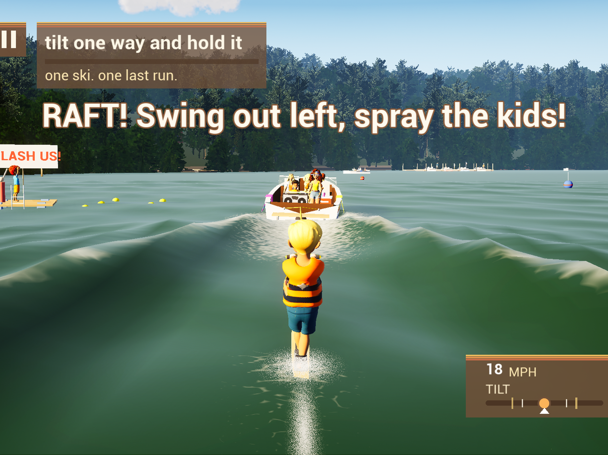
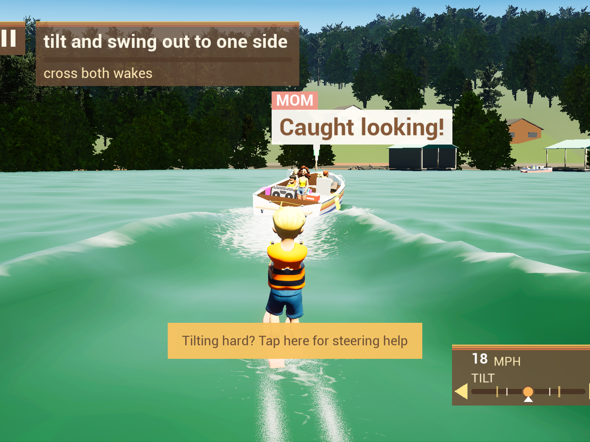